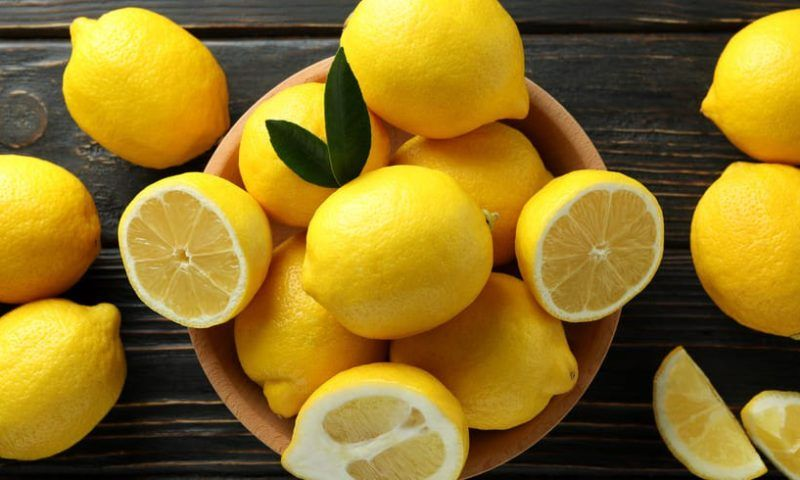

Лимон
Лимон – фрукт-универсал. Некоторые повара признаются, что если бы им поставили условие выбрать единственный плод для своей кухни, то лимон они бы взяли без колебаний. Ведь он ароматен, полезен, ярок по вкусу и красив. В лимоне все прекрасно: и мякоть, и кожура, и сок, и даже листья. Напитки, десерты, соусы, всевозможные блюда разных национальных кухонь – лимон способен на многое.

Описание продукта
Лимон – цитрусовый фрукт, плод небольшого вечнозеленого дерева Citrus limon семейства Рутовые. Кстати, само слово citrus на латыни означат лимонное дерево. По легенде, первые лимоны стали выращивать евреи на равнинах Палестины. Ученые также называют родиной лимона Индию, Китах, тропические острова Тихого океана. Сейчас он растет в субтропиках Средиземноморья, США, Мексики, Аргентины, стран Кавказа, Средней Азии.
Лимонное дерево невысокое, вечнозеленое, и листья его напоминают листья лавра – такие же кожистые, лоснящиеся с запасом эфирных масел.
Форма самих плодов может быть разнообразной: каплевидная, грушевидная, шаровидная, овальная. Размеры лимонов так же разнообразны, как и их формы – от мелких, с голубиное яйцо, до более увесистых.
Лимоны имеют яркий цитрусовый вкус, очень терпкий из-за кислотности фруктов. Из-за сильной кислинки лимоны обычно не едят сразу. Сок часто подслащивают сахаром или добавляют в еду понемногу. Внешняя кожура имеет ароматный лимонный вкус, лишенный терпкости и сладости. Белая мякоть между желтой цедрой и сочной мякотью сухая и горькая.
Сезон сбора лимонов в разных регионах различен, это зависит от климатических особенностей конкретной местности. Где-то его собирают зимой и весной, в других местах – осенью и зимой; есть регионы, где сезон сбора лимонов приходится на лето. Таким образом, лимон можно считать всесезонным продуктом.
Немного истории. Слово лимон на Руси появилось в конце XVI века и было заимствовано из персидского языка. Однако по-настоящему популярным в России этот фрукт стал немногим более сотни лет назад. В России дольки лимона добавляют в чай. То, что получается в итоге, на Западе именуют «русским чаем».
В России сложилась и другая непонятная для Запада традиция – закусывать лимоном водку и коньяк.